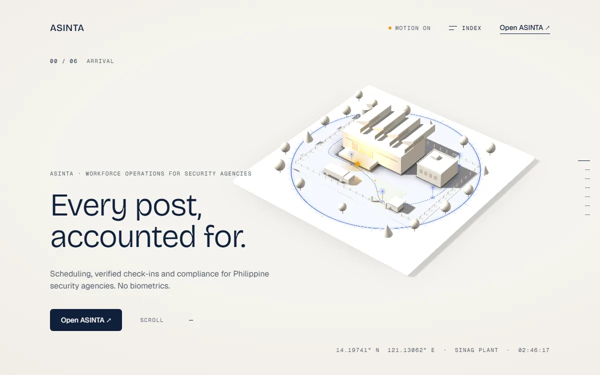

ASINTA
Landing page live · Platform complete
A workforce platform for security agencies. I build duty scheduling, secure guard check-in and role-based workflows across admin, guard and client portals.
- Challenge
- Security agencies juggle schedules, guard check-ins and client updates across separate tools.
- My role
- Full-stack developer in a five-person Scrum team.
- Approach
- Admin, guard and client portals on one Firebase backend, with location-verified check-in and role-based access.